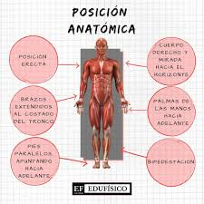

Posición elemental
Todos los movimientos parten de la posición anatómica cuyas características son:
1. Estar en posición vertical o de pie, frente al explorador.
2. Cabeza erecta sin inclinación.
3. Ojos abiertos mirando al frente y al mismo nivel.
4. Brazos extendidos a los lados del cuerpo.
5. Palmas de las manos orientadas hacia delante.
6. Piernas extendidas y juntas.
7. Pies paralelos y talones juntos.
Edufísico te habla sobre la Posición Anatómica.
